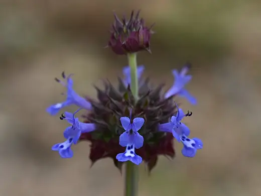

Desert chia
Desert chia is a wild seed or grain you can forage from May to July in California and Southwest. Small annual sage of desert and coastal scrub with ball-shaped whorls of blue flowers stacked up the stem.

When is desert chia in season in the United States?
Desert chia is usually in season May to July. Timing shifts with weather, latitude and altitude.
Where does desert chia grow in the United States?
Desert chia grows in Arizona, California, Hawaii, Nevada, New Mexico, Texas, Utah. Regions: California, Southwest.
How do you recognise desert chia?
Small annual sage of desert and coastal scrub with ball-shaped whorls of blue flowers stacked up the stem.
How do you harvest desert chia?
Shake or strip ripe seed heads into a bag when they rattle and fall easily. Winnow out the chaff in a breeze.
How do you eat desert chia?
Seeds soaked into a gel drink or ground into pinole, a staple of California nations.
How do you store desert chia?
Dry seeds.
What is desert chia good for?
Protein, Fat, Iron & calcium.
What can you cook with desert chia?
- Chia fresca: Chia seeds soaked in water with lime and a little honey.